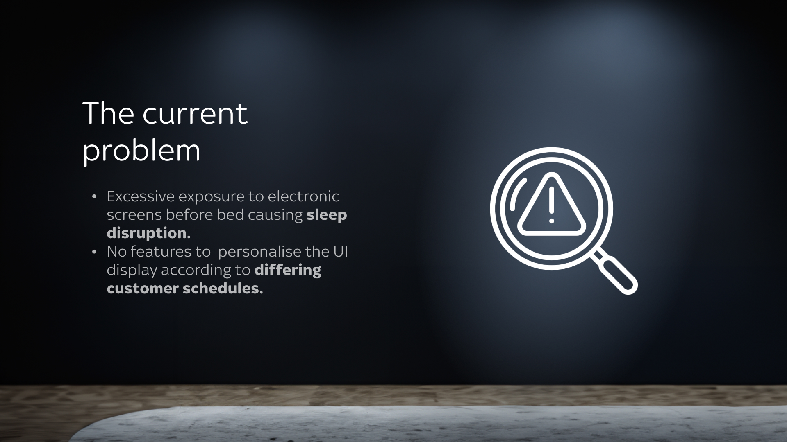
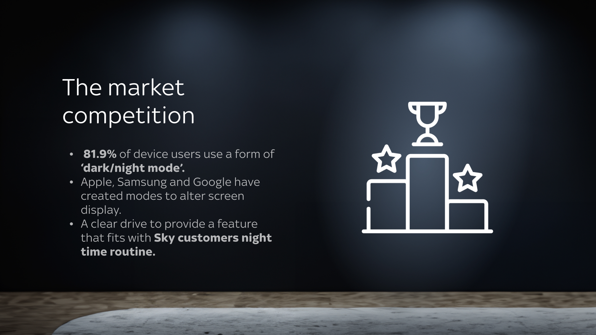
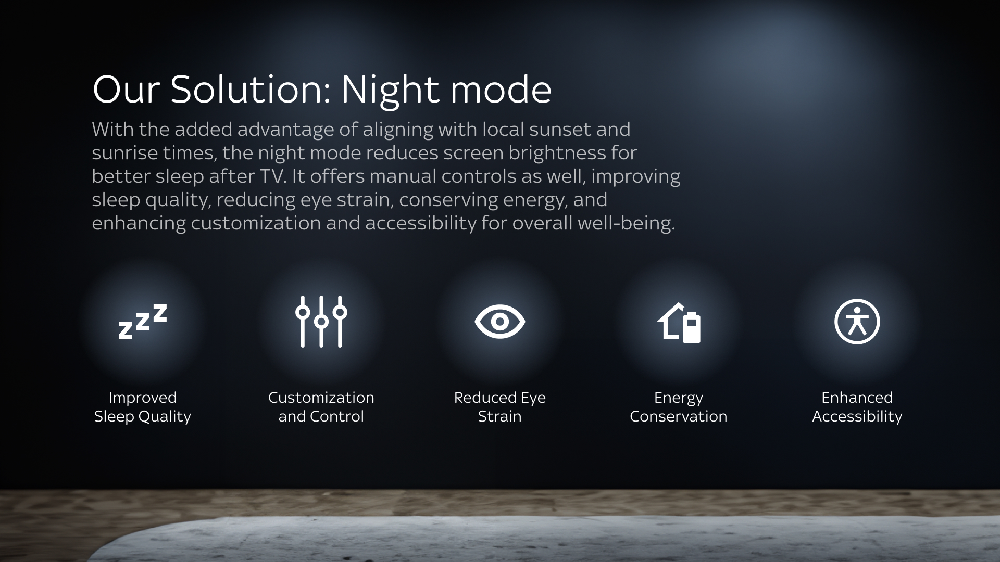
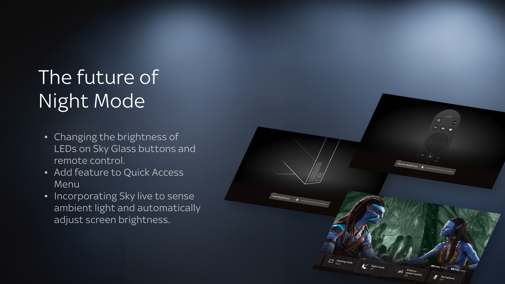

Case study · Sky Glass & Stream · Accessibility
Night Mode on Sky Glass and Stream
A new accessibility feature that gently dims the TV interface after sunset, so customers can wind down without being dazzled by a bright screen. I took it from idea to working demo as UI/UX designer and project manager, leading a team of seven.
- Role
- UI/UX Designer & Project Manager
- Team
- Led a team of 7
- Platform
- Sky Glass & Sky Stream
- When
- Lab Week · Sept 2023

01 — Overview
Designing for the hours after dark.
Night Mode started as Idea No. 26 at Comcast Labs’ Lab Week, a company-wide innovation week. The brief I set myself was simple: TV is often the last screen people look at before bed, so the interface should adapt to that moment instead of shining at full brightness all night.
As well as designing the experience, I ran the project: shaping the scope, planning the week and coordinating developers and testers so we could present a working feature at the end of it.
02 — Problem
Bright screens late at night disrupt sleep.
- Too much light before bed. Excessive exposure to bright screens late in the evening is linked to disrupted sleep.
- One display for every schedule. There was no way to personalise the UI display to fit different customers’ routines.

03 — Market
Customers already expect it on their other devices.
81.9% of device users use some form of dark or night mode. Apple, Samsung and Google all offer modes that change how the screen looks. That’s a clear signal to build a feature that fits Sky customers’ night-time routine.

04 — Solution
A display that follows the sun.
Night Mode follows local sunset and sunrise times, automatically lowering screen brightness so watching TV late doesn’t get in the way of a good night’s sleep. Manual controls let customers fit it to their own schedule.
- Improved sleep quality. Less bright light after dark.
- Customisation and control. Automatic by default, adjustable by hand.
- Reduced eye strain. More comfortable viewing in a dark room.
- Energy conservation. Lower brightness uses less power.
- Enhanced accessibility. A more comfortable experience for light-sensitive viewers.

05 — Demo
See it working.
A walkthrough of Night Mode running on the Sky interface.
06 — Leading the team
From idea to working feature, with seven people.
I led a cross-functional team of seven alongside my design work. I set the plan and priorities, kept everyone aligned on what we were building and why, and made sure design and engineering moved together through the week.
- Senior Developer
- Software Engineer
- Developer
- C++ Developer
- Manual Tester
- Senior Automation Tester
- Automation Tester
07 — What’s next
The future of Night Mode.
- Dimmer hardware lights. Lower the brightness of the LEDs on Sky Glass buttons and the remote control.
- One tap away. Add Night Mode to the Quick Access menu.
- Ambient sensing. Use Sky Live to sense the light in the room and adjust screen brightness automatically.

08 — Final thoughts
Small change, real comfort.
Night Mode is less about technology than about how people feel at the end of the day. By dimming the display after sunset it makes TV more comfortable and more inclusive, and it quietly tells customers that we care about their well-being.
It’s one of the projects I’m proudest of, both for the feature itself and for how the team came together to build it.
Tools: Figma.